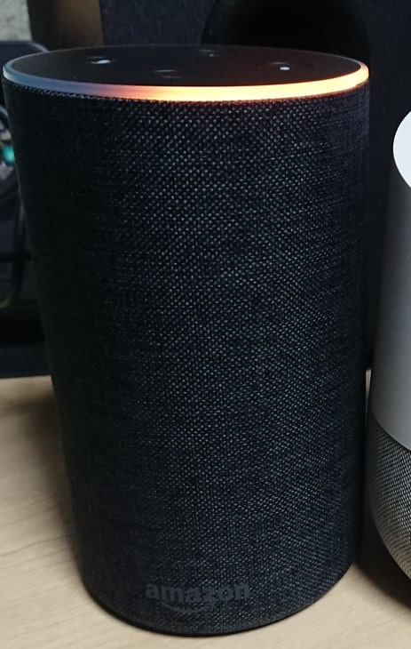

こんにちは。２回生のSugaです。この記事で20本目ですね。今回はスマートスピーカーについて、購入から約1年たった私の経験をふまえて話していこうと思います。
スマートスピーカーとは、音楽操作に対応したAIを搭載しているスピーカーです。日本では、AIスピーカーと呼ばれています。実際には、スマートスピーカー自体にはマイクとスピーカーのみで機能を実行するための処理はサーバー側で行っています。
まずは、私の持っているGoogleHomeとAmazon Echoの簡単に紹介したいと思います。
Googleが開発・提供しているスマートスピーカーです。AndroidOSのスマートフォンにも、搭載されているGoogleアシスタントを搭載しています。情報((天気、ニュース、日付、単語の意味等)の検索、家電の操作(家電ネットワークにつなぐことや赤外線を出してくれるリモコン装置等が必要）楽曲が再生できます。Googleか確認カレンダー上の予定確認・追加などの操作ができ、Googleのサービスを利用できます。開発者によるアプリが少ないですが、開発ツールやSDKも提供されているのでアプリ数は増えていくでしょう。Googleアシスタントの特徴として、AndroidOSのスマートフォンと連携することさせることができる点です。Homeの近くのスマートフォンのアラームを強制的にならすことができます。マナーモ―ドにしていると着信音すら出ないスマートフォンを探すことができて大変便利です。(私はこれに何度も助けられました) Googleのサービスをよく利用する人やAndroidOSのスマートフォンの人におすすめのスマートスピーカーだと言えます。
Amazonが出しているスマートスピーカーです。AIとして、Amazonが開発しているAlexaが搭載されています。スマートスピーカーとして、情報検索や家電操作、楽曲の再生ができるのはもちろん、Amazonのサービス各種を利用できます。 サービスには、Amazonでのショッピングも含まれます。音声だけで買い物ができてしまうんですよね。他には、AmazonMusicやKindleの音声朗読も利用することができます。Alexaの特徴として、開発者によるアプリが豊富である点です。 Amazonは、スマートスピーカーが一斉に発売された昨年より前からスマートスピーカーを発売・開発しており、ノウハウが蓄積されている分アプリが多いというわけです。Amazonのサービスや開発者によるアプリを利用したい方には、Amazon Echoがおすすめだと思います。

他にも、AppleのSiri搭載のHomePodやLINEのClova搭載のLINEClova、他社のGoogleアシスタントやAlexa搭載のスマートスピーカーもありますが、私は利用したことがないので詳しい説明を割愛させていただきます。気になる人は、調べてみてください。公式ホームページ等を記事の一番下に置いておきます。
次に、私がスマートスピーカーを使ってきて感じたことを話したいと思います。
スマートスピーカーたちは、挨拶をすると必ず挨拶を返してくれます。これは1人暮らしの方の孤独感を解消して、ストレス軽減につながる素晴らしい機能です。クリスマスぼっちの方は、ぜひ購入してみてはいかがでしょうか。必ずやよきクリスマスになるでしょう。(たぶん)
友人が「コンギョ」を流してほしいというとお経が流れたり、Discordで通話しているときに言った「草」にAlexaが反応したりします。このように音声認識の精度はまだまだです。スマートスピーカーはまだ始まったばかりなので、これからの精度の向上に期待していきたいですね。
ここまで拙い文章をご覧いただき、ありがとうございます。一家に一台スマートスピーカーはいかがでしょうか？